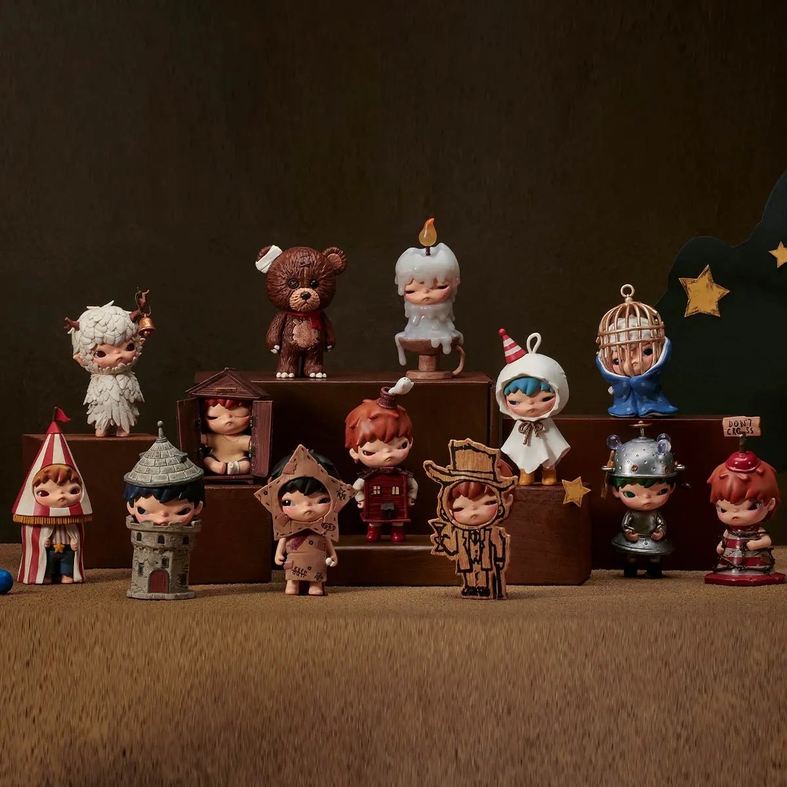
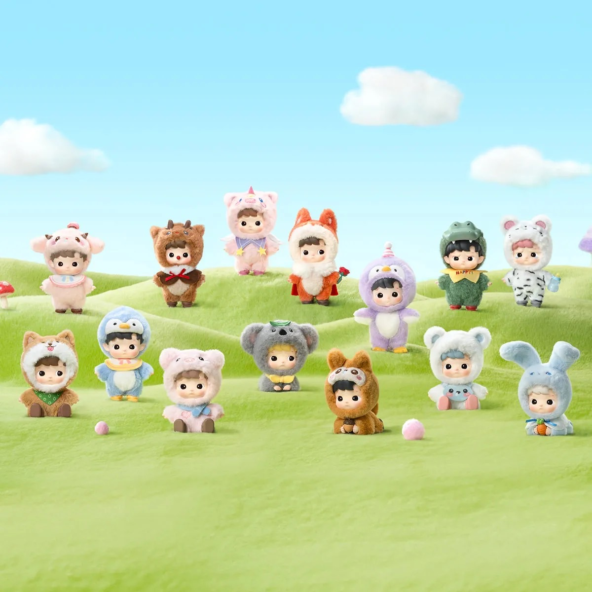
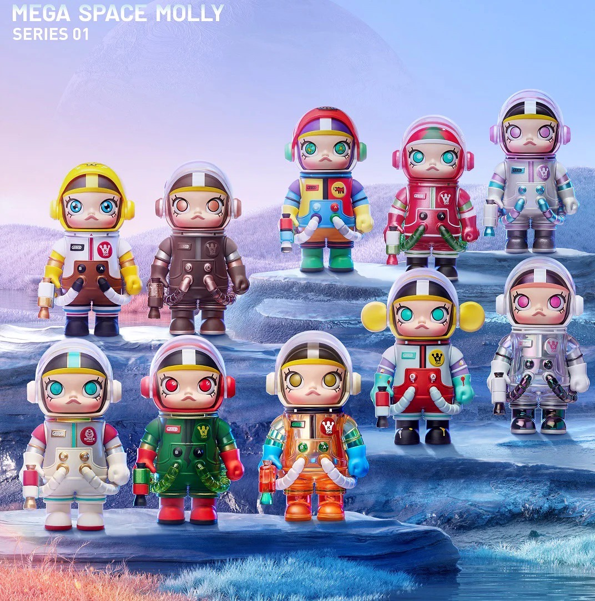

ñ¶π Buttercuptoy ñ¶π

แหล่งที่มา:centralpattana
⟡ About Us! ⟡
✦ Our shop was born from a passion for art toys, which began as a small collector who loved the design and creativity of these art toys, be it their unique designs, storytelling, or even the special feeling of owning a rare piece. What began as a hobby of collecting for personal enjoyment has inspired us to open this small shop to share that joy with others who share our passion for art toys. We believe that every character has a story, and each piece has its own value, whether you're a beginner or a seasoned collector. Therefore, this place is more than just an art toy shop, but "a place for those who understand and are passionate about toys that are more than just toys." We carefully select works from both local and international artists to allow everyone to fully experience the world of art toys.
✮ Product ✮
‡πŇ∏´‡∏•‡πà‡∏á‡∏ó‡∏µ‡πà‡∏°‡∏≤:www.popmart.com
⊹ Hirono Shelter ⊹
✦ blind box series “Shelter” hitting us and you with various emotions! Shelter is not only a place to stay physically but also a way for us to hide from worries and sadness. Hirono metamorphoses into different scenes, items, and identities, finding his safe shelter in the complicated world!
⋆ Price:380 Bath ⋆

แหล่งที่มา:www.popmart.com
⊹ Crybaby ⊹
✦ Each featuring a teary-eyed character dressed in charming animal and storybook- inspired outfits. Clip them to your bag, keys, or anywhere you need a little extra emotion.
⋆ Price:380 Bath⋆
‡πŇ∏´‡∏•‡πà‡∏á‡∏ó‡∏µ‡πà‡∏°‡∏≤:www.popmart.com
⊹ Hachipupu ⊹
✦ The little children all look cute, but they wear different fancy costumes, some of which are “animal or fantasy costumes”.
⋆ Price:380 Bath ⋆

แหล่งที่มา:www.popmart.com
⊹ Labubu ⊹
✦ Labubu is a "mischievous, kind-hearted female elf" created by Hong Kong artist Kasing Lung in his "The Monsters" series, inspired by Nordic folklore. Despite her fearsome appearance with sharp teeth and long ears, Labubu has a kind heart, is willing to help others, and has a playful and mischievous personality, representing the childish emotions and behaviors that still linger in adults.
⋆ Price:550 Bath ⋆
‡πŇ∏´‡∏•‡πà‡∏á‡∏ó‡∏µ‡πà‡∏°‡∏≤:www.popmart.com
⊹ Space Molly ⊹
✦ MOLLY is by artist Kenny Wong, who was inspired by a young child. The character is stubborn, cute, intelligent, confident and fun-loving.
⋆ Price:380 Bath ⋆

แหล่งที่มา:www.popmart.com
⊹ Skullpanda ⊹
✦ Skullpanda is a sweet-looking girl with a mysterious personality. She has the ability to travel freely through time, space, and parallel worlds in order to find her true identity.
⋆ Price:380 Bath ⋆